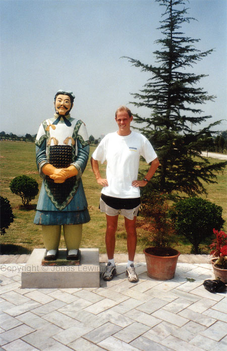
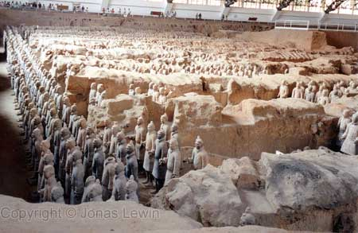
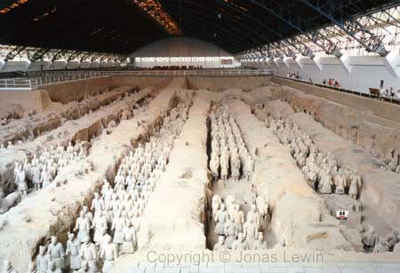
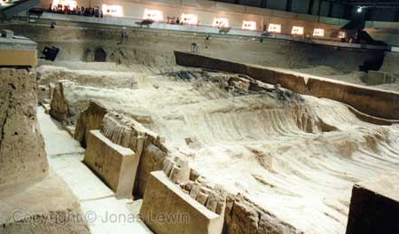
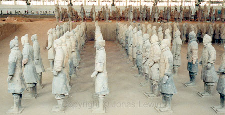
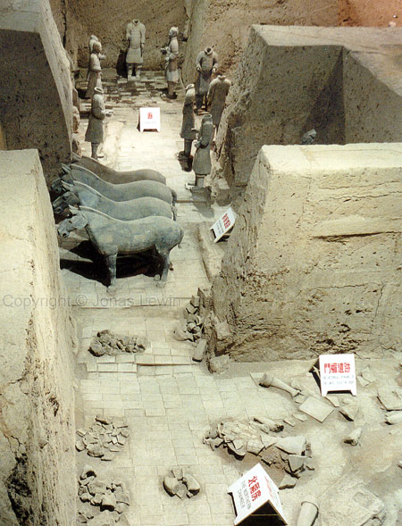
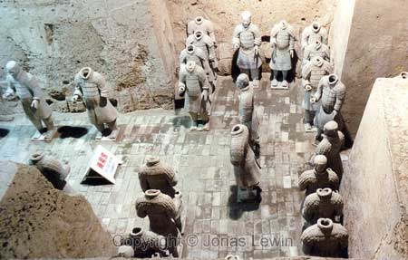
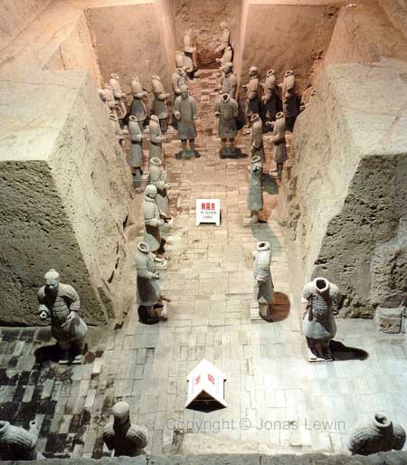
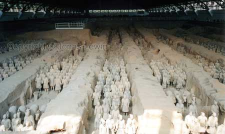
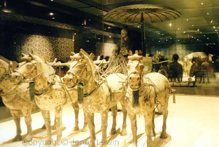

|
The
soldiers are quite tall. This is how they looked originally. They where
painted.
Hundreds
and hundreds of soldiers.
They
have 3 "domes" where the soldiers can be seen. This is dome 1.
Many
of the soldiers are not excavated yet. The government is waiting for
technology being able to preserve the original colors, before excavating any
more soldiers.

Some
horses where also created. As the name says, this was an entire army.
Many
guards, on their post, guarding something.
You
would have trouble walking here, if you where not invited. Guards all over
the place.
This
is dome 2. This army is unbelievable large.
To
display the level of detail, they have placed this horse and carriage on
display, behind glass.
Most of these pictures where taken by Hans Nyberg. I was not allowed to take
any photos at the time I was there, but the rules had changed when he was
there.
|